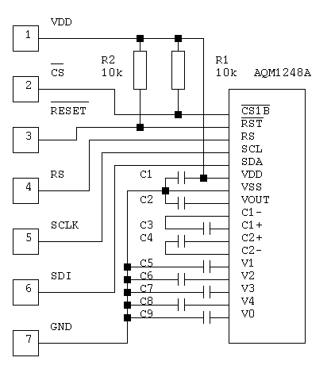
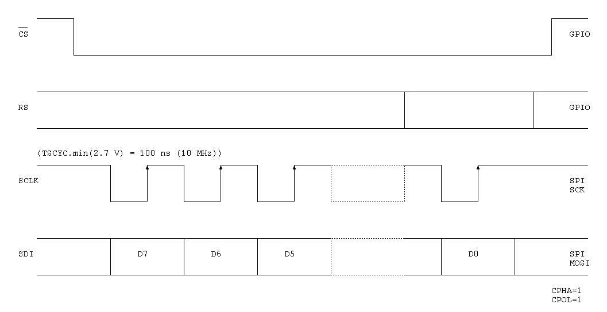

The AQM1248 is a 128x48 graphic LCD. It use the ST7565R controller. It has an SPI interface.


| Command | Code |
|---|---|
| Display ON/OFF | 1 0 1 0 1 1 1 0/1 |
| Display start line set | 0 1 A5 A4 A3 A2 A1 A0 |
| Page address set | 1 0 1 1 A3 A2 A1 A0 |
| Column address set | 0 0 0 1/0 A3 A2 A1 A0 |
| ADC select | 1 0 1 0 0 0 0 0/1 |
| Display normal/reverse | 1 0 1 0 0 1 1 0/1 |
| Display all points ON/OFF | 1 0 1 0 0 1 0 0/1 |
| LCD bias set | 1 0 1 0 0 0 1 0/1 |
| Read-modify-write | 1 1 1 0 0 0 0 0 |
| End | 1 1 1 0 1 1 1 0 |
| Reset | 1 1 1 0 0 0 1 0 |
| Common output mode select | 1 1 0 0 0/1 * * * |
| Power control set | 0 0 1 0 1 M2 M1 M0 |
| V0 voltage regulator internal resistor ratio set | 0 0 1 0 0 R2 R1 R0 |
| Electronic volume mode set | 1 0 0 0 0 0 0 1 0 0 V5 V4 V3 V2 V1 V0 |
| Static indicator ON/OFF | 1 0 1 0 1 1 0 0/1 0 0 0 0 0 0 0 M0 |
| Booster ratio set | 1 1 1 1 1 0 0 0 0 0 0 0 0 0 V1 V0 |
| NOP | 1 1 1 0 0 0 1 1 |